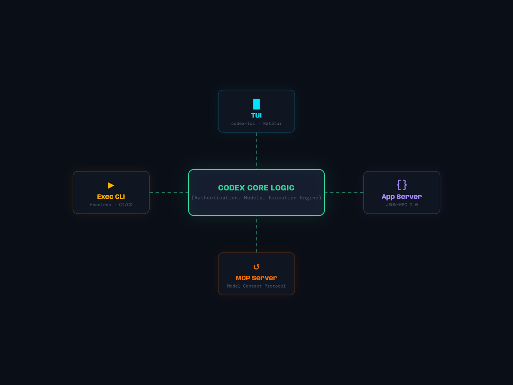
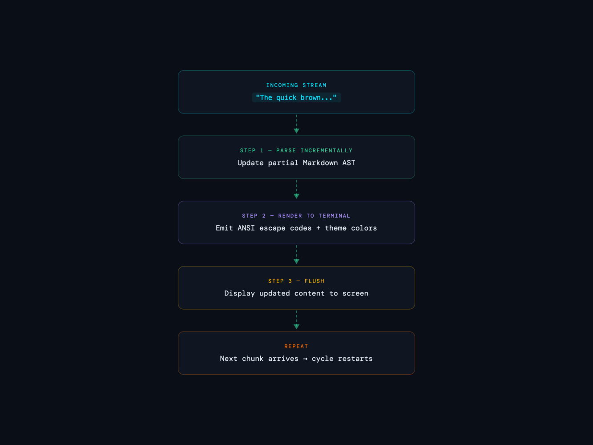
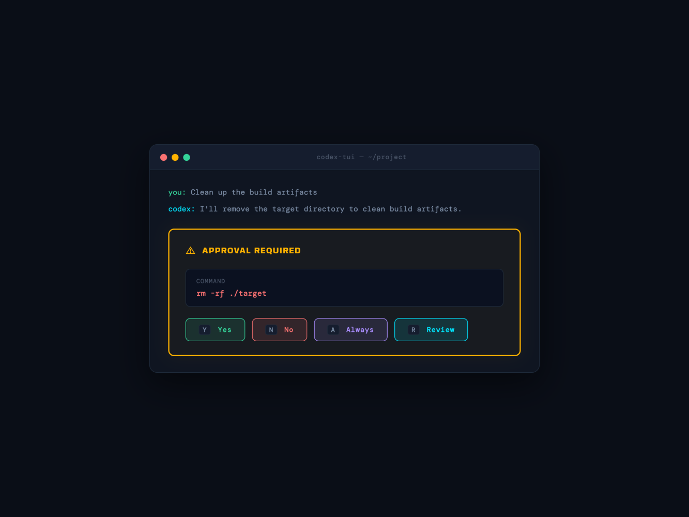
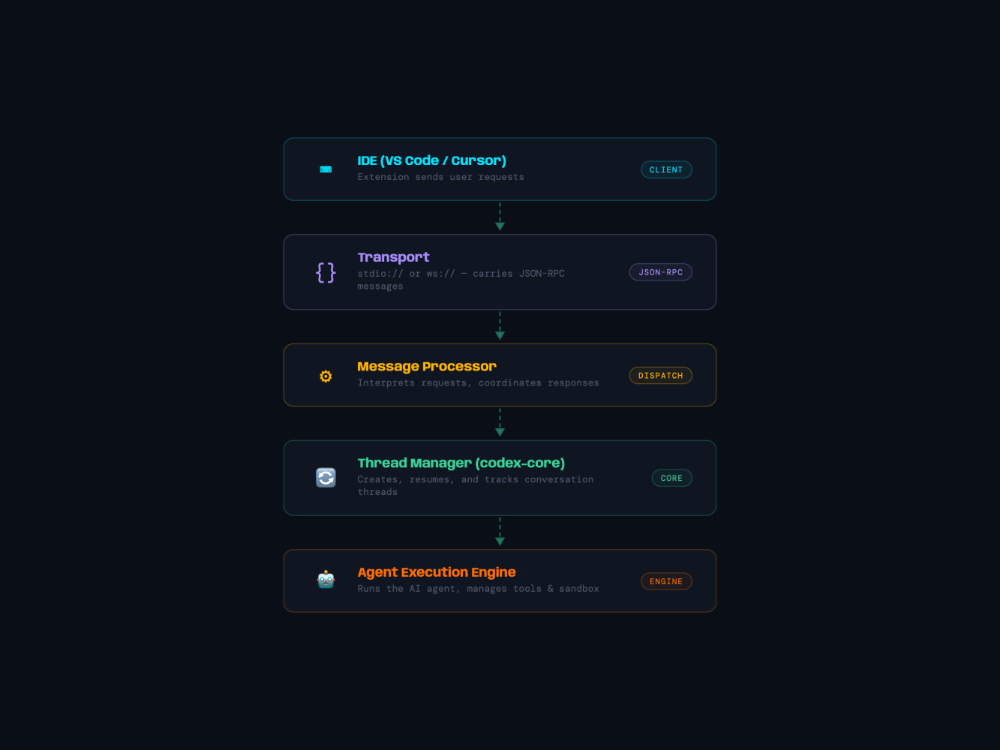
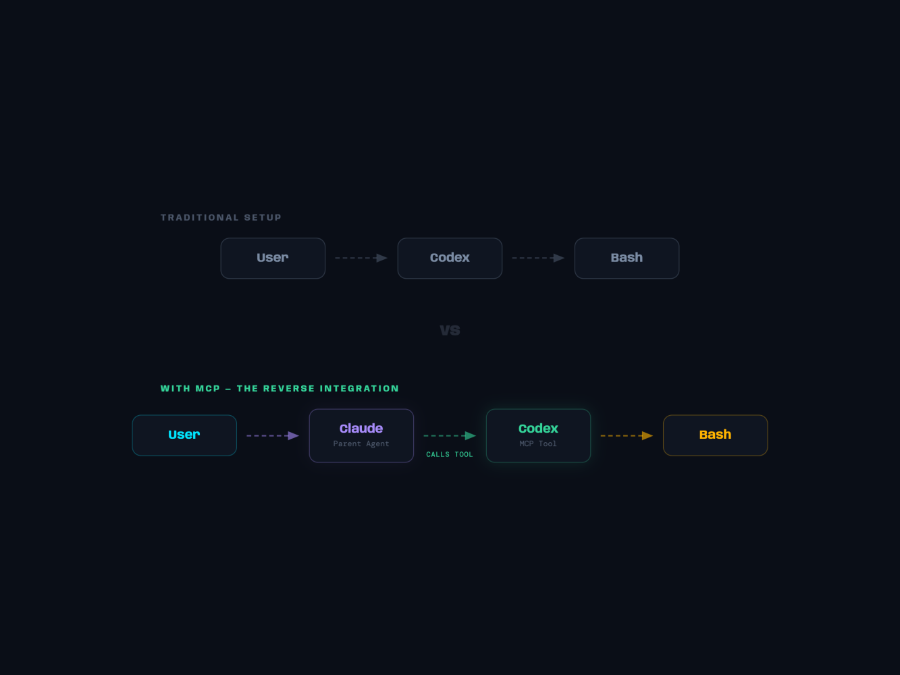
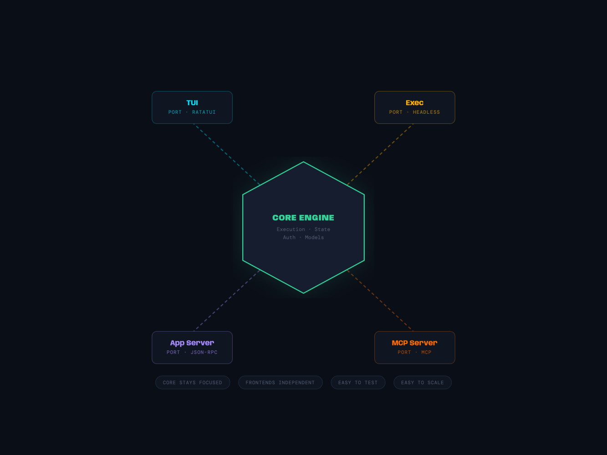

Part 5: Four Windows Into One Brain TUI, Exec, App Server, and MCP Server
Welcome back to our deep dive into Codex, the OpenAI CLI agent that's reshaping how developers interact with AI. In Part 4, we explored how
Codex manages execution—sandboxes, approvals, and rollback. But here's the thing: execution is just one face of a much larger organism. Codex isn't a single product. It's an architecture that manifests in four completely different ways, each optimised for a different user or integration. Same core logic. Four entirely different experiences.
This is Part 5, where the design elegance emerges.
The Power of Decoupling: One Brain, Four Windows
Imagine a surgeon with four pairs of hands, each controlled by the same brain but configured for different specialities:
- One hand holds a scalpel (for precision TUI work)
- One hand holds a hammer (for headless CI automation)
- One hand types on a keyboard (for IDE integration via JSON-RPC)
- One hand reaches out to other agents (as an MCP tool)
This is Codex's architecture.

At the centre sits the core execution engine—the same state machine, event loop, thread management that we explored in Parts 3 and 4. Around it: four completely different frontends.
- TUI (codex-tui): A rich, interactive terminal interface with vim bindings, real-time markdown rendering, diff views, and approval dialogs.
- Exec (codex-exec): Headless CLI for CI/CD pipelines and automation. Two output modes: pretty terminal or machine-readable JSONL.
- App Server: JSON-RPC 2.0 server over stdio or WebSocket. This is what VS Code/Cursor extensions talk to.
- MCP Server: The "reverse integration"—Codex becomes a tool for other AI agents via the Model Context Protocol.
The beauty isn't just code reuse. It's that adding a new frontend is trivial. You don't touch the core. You just consume the protocol.
Deep Dive 1: The TUI—Ratatui's Interactive Terminal
The TUI is Codex's primary interactive experience, and it's built on ratatui, a Rust-based terminal UI framework. Let's understand its anatomy.
App State Machine & Event Loop
The TUI is fundamentally an event-driven state machine. The central type is App, defined in /codex-rs/tui/src/app.rs:
pub struct App {
// Thread management
active_thread_id: ThreadId,
threads: HashMap<ThreadId, ThreadState>,
// UI state
chat_widget: ChatWidget,
bottom_pane: BottomPane,
status_indicator: StatusIndicator,
// Theme & rendering
current_theme: Theme,
terminal: CustomTerminal,
}Every user action—a keystroke, a message arrival, an approval request—becomes an AppEvent. The app loop dispatches:
loop {
// 1. Render the current screen
self.render(&mut terminal)?;
// 2. Wait for input or network events
let event = select! {
key = crossterm::event::read() => handle_key(key),
msg = thread_receiver.recv() => AppEvent::CodexEvent(msg),
};
// 3. Update state
self.update(event)?;
}This is classic Redux/Elm architecture: immutable state, pure transitions. It makes reasoning about the UI deterministic.
Streaming Markdown Rendering
One of TUI's superpowers is rendering markdown as it streams. When Claude responds, characters arrive byte-by-byte. The TUI needs to render them live without flickering or waiting.
The markdown_stream.rs module handles this. It maintains a partial markdown AST and rerenders only what changed:

ANSI color support comes next. The markdown renderer emits ANSI escape codes for syntax highlighting, bold, italic. The theme system lets users toggle dark/light modes seamlessly—colors are theme-aware.
Vim Bindings & Key Handling
Developers expect vim bindings. The TUI provides:
- j/k for scrolling
- i to enter insert mode (for typing messages)
- Escape to exit and navigate
- dd to delete a message
- r to review pending approvals
- :q to quit
This is implemented as a keybinding layer that intercepts crossterm events and translates them to semantic actions.
Approval Dialogs & Review Flows
When Codex needs approval—to execute a command, apply a patch—the TUI shows an approval dialog in the bottom pane. It's interactive:

Users can review the full diff, see the context, and approve, deny, or set a preset policy (e.g., "always approve file reads").
Diff Views
The diff_render.rs module renders git diffs with context, line numbers, and color-coding. Deletions are red, additions are green. Users can scroll through a proposed patch before approving.
Deep Dive 2: The Headless Exec—For CI and Automation
Now shift gears. You're in a GitHub Actions workflow. You can't open an interactive terminal. You need Codex to:
- Run the agent
- Output machine-readable results
- Exit cleanly
This is codex-exec, the headless mode.
Two Output Modes
The EventProcessor trait defines two concrete implementations:
EventProcessorWithHumanOutput: Pretty, colorized output for terminal use. Same as TUI, but simpler—no interactive widgets, just streaming text. Good for developers who invoke codex exec locally.
EventProcessorWithJsonOutput: Machine-readable JSONL (one JSON event per line). Each event is timestamped and labeled:
{"type":"session_configured","model":"gpt-4","timestamp":"2026-03-18T10:30:00Z"}
{"type":"turn_started","thread_id":"abc123","timestamp":"2026-03-18T10:30:01Z"}
{"type":"message_chunk","content":"Looking at your code...","timestamp":"2026-03-18T10:30:02Z"}
{"type":"turn_complete","result":"success","timestamp":"2026-03-18T10:30:05Z"}Scripts can parse this, extract results, or trigger downstream workflows.
Auto-Approval Modes
In headless mode, there's no user to click "Approve." So Codex offers execution policies:
- --auto-approve-low-risk: Approve file reads and directory listings
- --auto-approve-harmless: Approve non-destructive commands
- --sandbox=strict: Require approval even in low-risk mode
- --no-approval-policy: Interactive (error in CI)
A policy engine evaluates each action:
pub fn should_auto_approve(action: &ApprovalRequest) -> bool {
match action {
ApprovalRequest::ReadFile { path } => {
// File reads are low-risk; approve if policy allows
policy.allows_file_reads && !is_secrets_file(path)
}
ApprovalRequest::ExecuteCommand { cmd } => {
// Commands are risky; only approve if harmless
policy.allows_harmless_execs && is_safe_command(cmd)
}
ApprovalRequest::ApplyPatch { .. } => {
// Patches modify code; usually require approval
false
}
}
}Deep Dive 3: The App Server—JSON-RPC 2.0 for IDEs
Now here's where things get really interesting. VS Code. Cursor. Any IDE that wants to integrate Codex.
They don't want to shell out and parse JSONL. They want a bidirectional protocol—a real conversation where the IDE sends requests and Codex sends responses.
Enter the App Server, a JSON-RPC 2.0 implementation.
Architecture: Transport + Message Processor
The app-server has two layers:
- Transport: Carries JSON-RPC messages over stdio (for in-process connections) or WebSocket (for remote IDEs).
- Message Processor: Interprets requests, coordinates with the core execution engine, and sends responses.

Key JSON-RPC Methods
Codex exposes these methods:
Thread lifecycle:
- thread/start { model, instructions } → ThreadStartResponse { thread_id }
- thread/resume { thread_id } → Reconnects to a running thread
- thread/unsubscribe { thread_id } → Stop listening to updates
Conversation:
- turn/start { thread_id, user_message } → Agent responds
- turn/interrupt { thread_id } → Stop mid-response
Reviews:
- review/start { thread_id, target: "patch" | "command" } → Show approval dialog
- review/respond { approval: true | false } → User decision
Config:
- config/get → Returns current user config
- config/update → Updates settings
Thread Management
The app-server maintains a thread registry, keyed by ThreadId:
pub struct ThreadManager {
threads: HashMap<ThreadId, RunningThread>,
sender: mpsc::Sender<ThreadEvent>,
}
pub struct RunningThread {
core_handle: JoinHandle<()>,
event_tx: mpsc::Sender<Event>,
event_rx: mpsc::Receiver<Event>,
}When an IDE sends turn/start, the app-server:
- Looks up the thread
- Sends the user message to the thread's event channel
- Waits for responses
- Streams them back to the IDE
All async, all non-blocking.
Stdio vs. WebSocket Transport
Stdio: Used when running the app-server in-process (e.g., codex-app-server stdio://). The transport reads from stdin, writes to stdout. Simple, local, fast.
WebSocket: Used for remote IDEs. The app-server listens on a TCP socket, upgrades connections to WebSocket, and maintains a persistent bidirectional stream.
pub enum AppServerTransport {
Stdio,
WebSocket { bind_address: SocketAddr },
}The message processor doesn't care which transport is in use. It just reads from incoming_tx and writes to outgoing_tx. Beautiful separation.
How VS Code / Cursor Uses It
A typical flow:
// VS Code Extension (TypeScript)
const transport = new WebSocketTransport("ws://localhost:9876");
const client = new AppServerClient(transport);
// Start a new thread
const { thread_id } = await client.request("thread/start", {
model: "gpt-4",
instructions: "You are a helpful coding assistant."
});
// Send a message
const response = await client.request("turn/start", {
thread_id,
user_message: "Explain this function",
});
// Listen for streaming updates
client.subscribe("turn/event", (event) => {
console.log(event.chunk); // Render in editor
});Deep Dive 4: The MCP Server—Codex as a Tool for Others
Here's the twist: what if Codex itself becomes a tool that other AI agents can call?
This is the MCP Server (codex-mcp-server). It implements the Model Context Protocol, turning Codex into a callable function for Claude, Claude-in-VS-Code, or any other MCP-aware agent.
The "Reverse Integration"

Claude can say: "I need to run a command. Let me ask Codex to do it safely."
rmcp Implementation
The MCP server uses the rmcp crate (Rust Model Context Protocol). It listens on stdio and speaks JSON-RPC 2.0:
pub async fn run_main(arg0_paths: Arg0DispatchPaths) -> IoResult<()> {
// Initialize
let config = Config::load().await?;
let (tx, rx) = mpsc::channel(128);
// Start the message processor
let processor = MessageProcessor::new(config);
spawn_processor_task(processor, rx, tx);
// Main loop: read JSON-RPC from stdio, dispatch to processor
let mut reader = BufReader::new(io::stdin());
let mut line = String::new();
loop {
line.clear();
reader.read_line(&mut line).await?;
let msg: JsonRpcMessage = serde_json::from_str(&line)?;
tx.send(msg).await?;
}
}CodexToolRunner
The MCP server exposes a single tool called run_codex:
{
"type": "tool",
"name": "run_codex",
"description": "Run an AI coding agent to solve tasks",
"inputSchema": {
"type": "object",
"properties": {
"task": {
"type": "string",
"description": "What you want Codex to do"
},
"auto_approve": {
"type": "boolean",
"description": "Auto-approve low-risk actions"
}
}
}
}When Claude (the parent agent) calls this:
Claude: I need to refactor this function. Let me use Codex.
[calls tools/run_codex with task="Refactor UserService.authenticate for clarity"]
Codex receives → Runs agent → Returns result → Claude integratesThe CodexToolRunner in codex_tool_runner.rs handles the orchestration:
pub struct CodexToolRunner {
exec_client: InProcessAppServerClient,
}
impl CodexToolRunner {
pub async fn execute(&self, params: CodexToolCallParam) -> CodexToolCallReplyParam {
// Start a thread
let thread_id = self.exec_client.thread_start(params.task).await?;
// Run the agent
let result = self.exec_client.wait_for_completion(thread_id).await?;
// Return structured result
CodexToolCallReplyParam {
success: true,
output: result.final_message,
patches: result.patches,
}
}
}Approval Flows in MCP
But wait—Codex needs approvals. How does that work when called from another agent?
MCP supports tool result callbacks. When Codex needs approval, it returns:
{
"type": "tool_result",
"tool_use_id": "run_codex_call",
"content": "Action requires approval",
"is_error": false,
"pending_action": {
"type": "execute_command",
"command": "rm -rf ./build",
"request_id": "approval_123"
}
}The parent agent (Claude) sees this and decides: Does the user want me to approve? Or should I ask?
How Adding a New Frontend Works
Say you want to add a web UI (codex-web). Here's the recipe:
- Consume the App Server protocol: Implement the JSON-RPC 2.0 client, connect to the app-server via WebSocket, and send/receive the standard methods.
- Build the frontend: React, Vue, whatever. Your app reads thread/start responses, renders threads, sends turn/start messages.
- Deploy: Run codex-app-server ws://0.0.0.0:8080 in the background. Point your web UI at it.
That's it. The core doesn't change. The app-server doesn't change. You're just calling an existing protocol.
The Architecture Pattern: Hexagonal Design
This is hexagonal architecture (a.k.a. ports and adapters):

Benefits:
- Core stays focused: Authentication, execution, state management. No UI concerns.
- Frontends are independent: TUI can evolve without touching exec or MCP.
- Easy to test: Mock the core, verify each frontend independently.
- Easy to scale: Run multiple app-servers, share the same core backend.
The Cliffhanger: Codex Using Tools
Here's the thing: we've seen Codex as a tool for other agents. But what about the reverse?
What if Codex—while solving a problem—could call other tools? What if it could invoke external APIs, query databases, or collaborate with other agents in real time?
This is where MCP gets really interesting.
In Part 6, we'll explore how Codex becomes a full MCP client—not just a server. We'll see how it discovers tools, orchestrates complex workflows, and becomes part of a larger ecosystem of AI agents.
Codex won't just be a tool. It will use tools. And that changes everything.
Series Navigation:
- Part 1: Architecture Overview
- Part 2: The Protocol & Message Flow
- Part 3: Thread, Core, and the State Machine
- Part 4: Execution, Approval, and Rollback
- Part 5: Four Windows Into One Brain ← You are here
- Part 6: MCP Tools & Ecosystem Integration
- Part 7: Scaling, Deployment, and Production
- Part 8: The Future of AI Agents
This article is part of "Anatomy of an AI Coding Agent: Dissecting the OpenAI Codex CLI," a technical deep dive into Rust, async design, and modern AI architecture.
Originally published on LinkedIn.